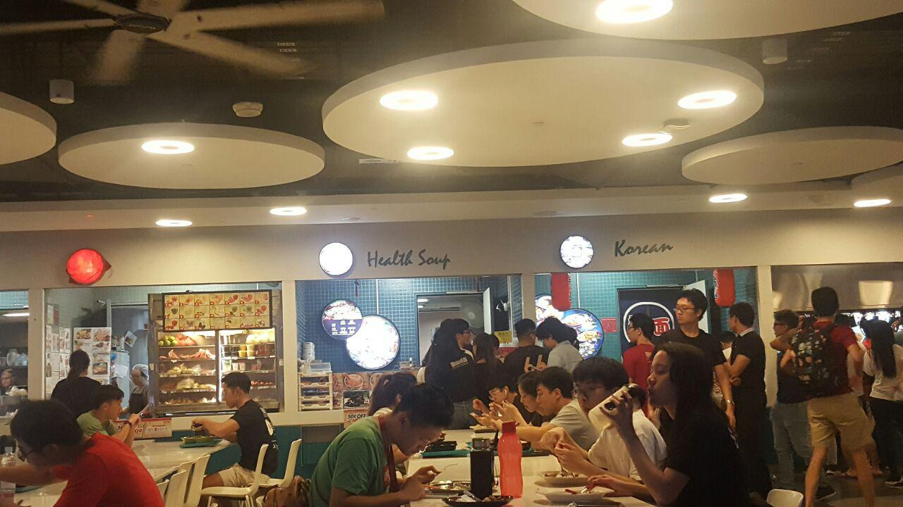
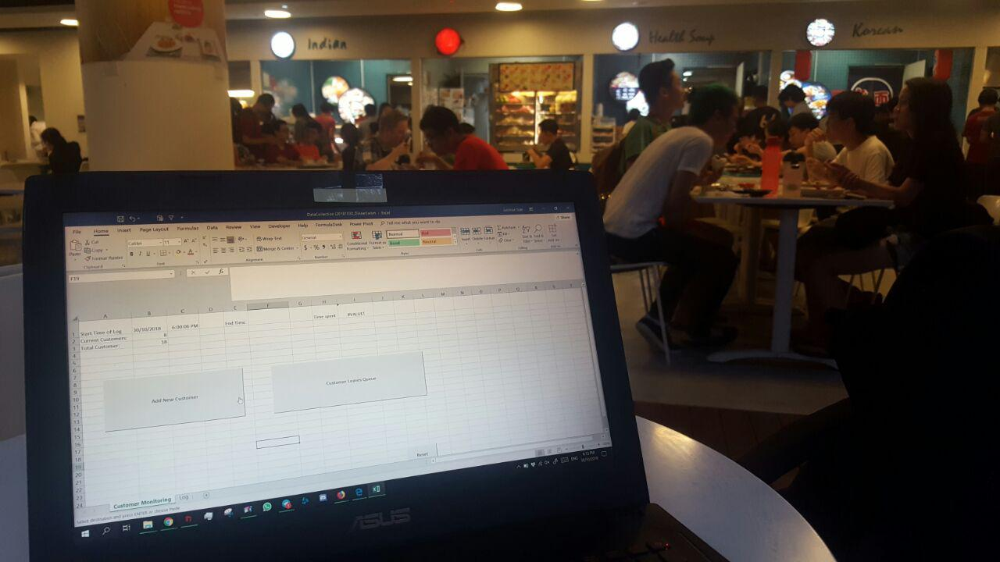

VBA Tool UI

The user interface of the recording tool consists of 3 buttons and a display.
The left button adds a customer to the back of the queue and records down the time which they enter.
The right button removes the customer at the front of the queue and records down the time which they leave. In addition, it also calculates the time the customer spent in the queue based on the time which they arrive.
The reset button clears the recorded information. It also has a confirmation warning to prevent accidental presses (shown below).
The display shows the time which the recording starts (recorded when the add button is first pressed) and the elapsed time. It also shows the current customers in the queue and the total number of customers that has joined the queue since the start.

VBA Code
This is the code for the VBA data collection tool.
The first image shows the code for the 3 buttons, which are on sheet 1.

The following module is called when the reset button is pressed, and the reset is confirmed.

Next up, is the module for the "add customer" button.


And finally, the module for the "leave queue" button.


Samples of Data Collected
Here are some of the samples of data we collected. The full set of data are available in the excel files within the folder 09) Data Collection


Images of location
Below are some images of us collecting data on site.
 